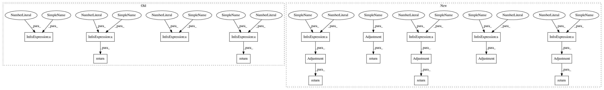

75a053cd12ec210c70e5140289e2106434e60d62,w3af/core/controllers/core_helpers/status.py,CoreStatus,get_crawl_adjustment_ratio,#CoreStatus#,537
Before Change
// this we set a big adjustment ratio
//
if run_time < 30:
return CRAWL_DEFAULT_ADJUSTMENT_RATIO * 20
if run_time < 60:
return CRAWL_DEFAULT_ADJUSTMENT_RATIO * 15
if run_time < 120:
return CRAWL_DEFAULT_ADJUSTMENT_RATIO * 7.5
if run_time < 180:
return CRAWL_DEFAULT_ADJUSTMENT_RATIO * 3.5
return CRAWL_DEFAULT_ADJUSTMENT_RATIO
def get_audit_adjustment_ratio(self):
After Change
// this we set a big adjustment ratio
//
if run_time < 30:
return Adjustment(unknown=CRAWL_DEFAULT_UNKNOWN_ADJUSTMENT_RATIO * 25)
if run_time < 60:
return Adjustment(unknown=CRAWL_DEFAULT_UNKNOWN_ADJUSTMENT_RATIO * 10)
if run_time < 120:
return Adjustment(unknown=CRAWL_DEFAULT_UNKNOWN_ADJUSTMENT_RATIO * 5)
if run_time < 180:
return Adjustment(unknown=CRAWL_DEFAULT_UNKNOWN_ADJUSTMENT_RATIO * 1.5)
return Adjustment(unknown=CRAWL_DEFAULT_UNKNOWN_ADJUSTMENT_RATIO)
def get_audit_adjustment_ratio(self):
:see: Documentation for get_crawl_adjustment_ratio
In pattern: SUPERPATTERN
Frequency: 3
Non-data size: 19
Instances
Project Name: andresriancho/w3af
Commit Name: 75a053cd12ec210c70e5140289e2106434e60d62
Time: 2018-07-23
Author: andres.riancho@gmail.com
File Name: w3af/core/controllers/core_helpers/status.py
Class Name: CoreStatus
Method Name: get_crawl_adjustment_ratio
Project Name: andresriancho/w3af
Commit Name: 75a053cd12ec210c70e5140289e2106434e60d62
Time: 2018-07-23
Author: andres.riancho@gmail.com
File Name: w3af/core/controllers/core_helpers/status.py
Class Name: CoreStatus
Method Name: get_crawl_adjustment_ratio
Project Name: andresriancho/w3af
Commit Name: 75a053cd12ec210c70e5140289e2106434e60d62
Time: 2018-07-23
Author: andres.riancho@gmail.com
File Name: w3af/core/controllers/core_helpers/status.py
Class Name: CoreStatus
Method Name: get_grep_adjustment_ratio
Project Name: andresriancho/w3af
Commit Name: 75a053cd12ec210c70e5140289e2106434e60d62
Time: 2018-07-23
Author: andres.riancho@gmail.com
File Name: w3af/core/controllers/core_helpers/status.py
Class Name: CoreStatus
Method Name: get_audit_adjustment_ratio